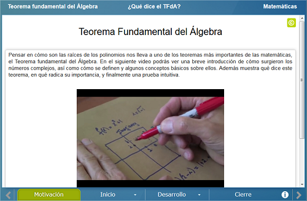
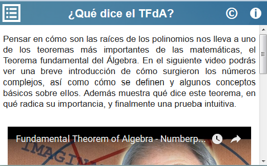

Teorema Fundamental del Álgebra (TFdA)
Teorema Fundamental del Álgebra (TFdA)
 Teorema Fundamental del Álgebra (TFdA)
Teorema Fundamental del Álgebra (TFdA)
Pensar en cómo son las raíces de los polinomios nos lleva a uno de los teoremas más importantes de las matemáticas, el Teorema fundamental del Álgebra. En esta unidad didáctica se repasan conceptos relativos a los números complejos: representación geométrica por medio de diagramas de Argand, producto y potencias y la fórmula de Euler. El objetivo de la unidad es que el alumno tengo una aproximación a dos posibles demostraciones del teorema a través del desarrollo de una intuición geométrica.
Se muestra un video con una breve introducción al concepto de número complejo y una de las demostraciones antes mencionadas.


Se hace un recordatorio de algunas propiedades, representaciones y operaciones con números complejos, así como el enunciado del Teorema fundamental del álgebra con algunos ejemplos.
Esta sección consta de tres partes. En la primera parte se da una representación geométrica del producto de complejos por medio de la fórmulo de Euler. En una segunda escena se analiza el comportamiento de las gráficas de la parte real y de la parte imaginaria de un polinomio grado 1 a 5 del cual se conocen sus raíces. Finalmente se muestra que las gráficas de la parte real y de la parte imaginaria de un polinomio de grado 1 a 5 del que se desconocen sus raíces se comportan de manera similar a las gráficas de la escena anterior, que a su vez, a una escala adecuada, se comportan como un número complejo elevado a una potencia igual al grado del polinomio.
Se habla de la cuadratura de Gauss, que es el principio geométrico del producto de números complejos y se menciona que esta cuadratura de hecho tiene aplicaciones en la realidad.
| Diseño del contenido | Elsa Sirenia Vega Camacho José Luis Abreu León |
| Diseño funcional | Elsa Sirenia Vega Camacho José Luis Abreu León |
| Programación | Elsa Sirenia Vega Camacho |
| Asesoría de programación |
Leticia Montserrat Vargas Rocha José Luis Abreu León |
| Diseño gráfico | Ricardo López Gómez |
| Coordinación | Leticia Montserrat Vargas Rocha |
| Diseño funcional | Elsa Sirenia Vega Camacho |
| Programación | Elsa Sirenia Vega Camacho |
| Asesoría de programación | Leticia Montserrat Vargas Rocha |
| Diseño gráfico | Francisco Varela Fuentes |
| Coordinación | Leticia Montserrat Vargas Rocha |
| Desarrollo del contenedor | Oscar Escamilla González |
Los contenidos de esta unidad didáctica interactiva están bajo una licencia Creative Commons Reconocimiento-NoComercial-CompartirIgual.
La unidad didáctica fue creada con Arquímedes, una herramienta de código abierto.
La unidad didáctica contiene escenas elaboradas con Descartes, una herramienta de código abierto.
LITE - UnADM 2014